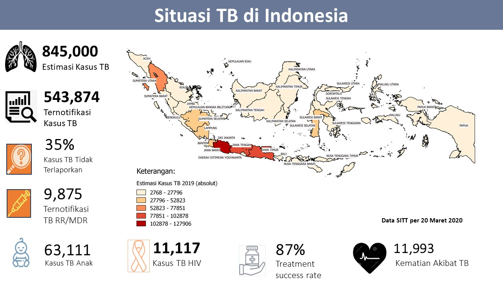
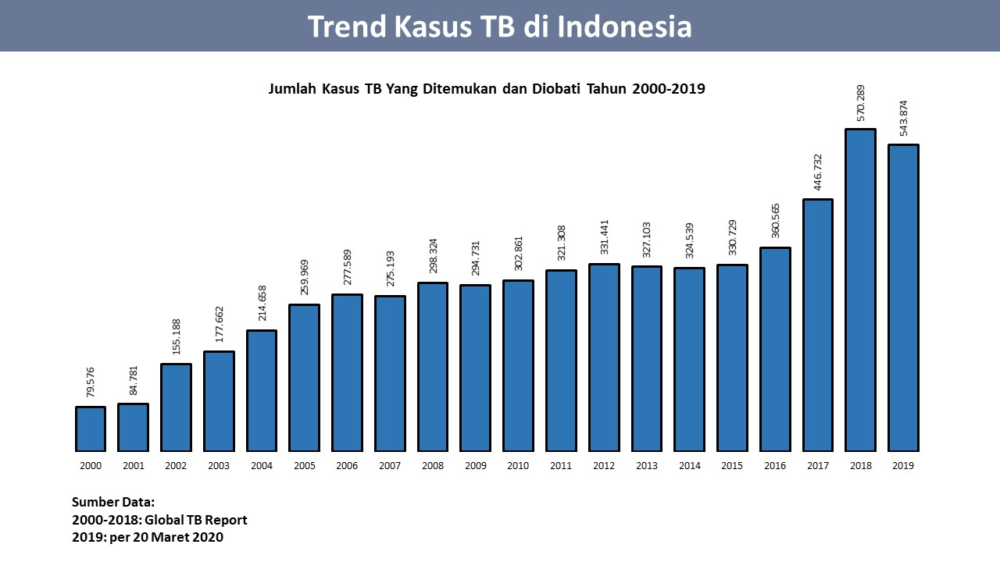
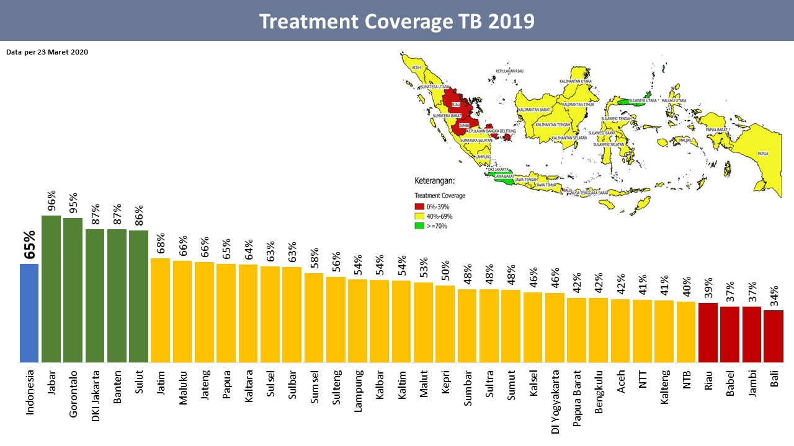
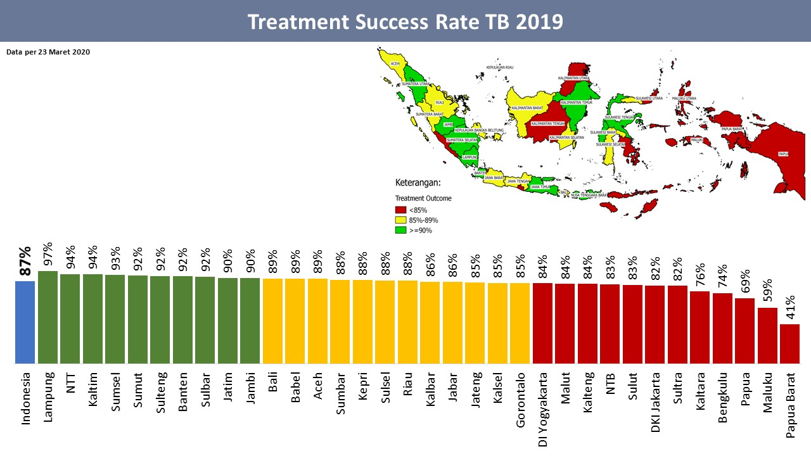
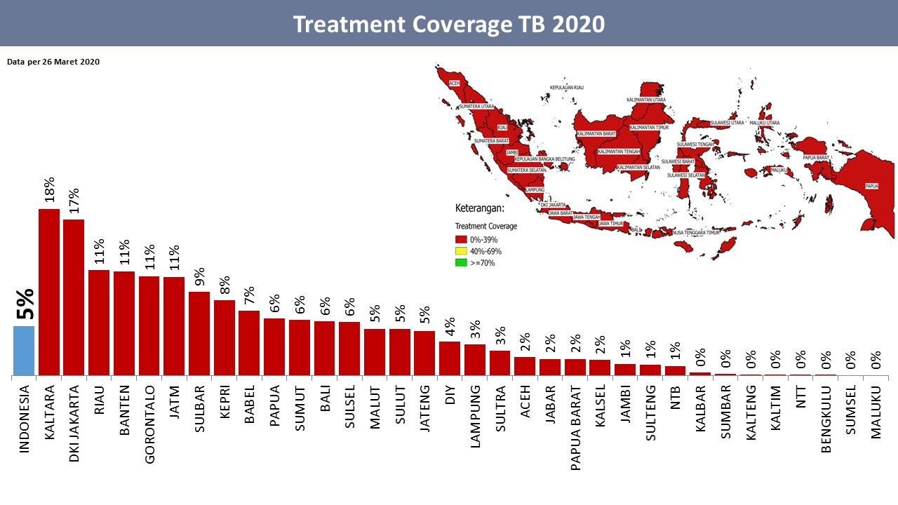
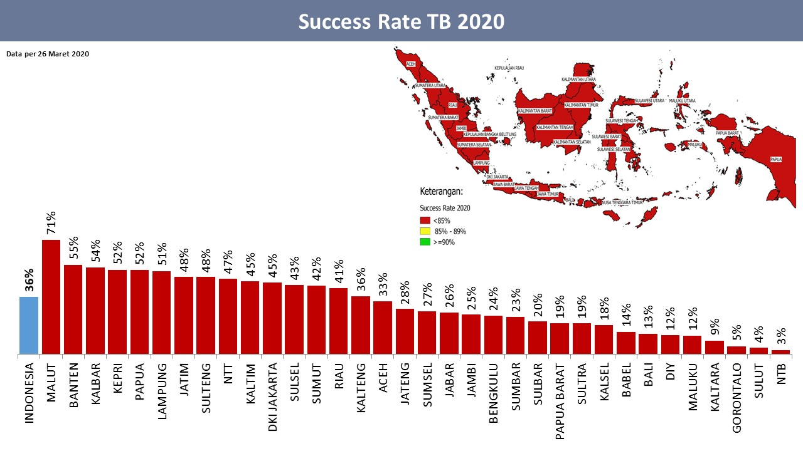

GROUP IV
HOME
(current)
VIRUS TUBERCULOSIS (TBC)
Gejala
Pencegahan
Pengobatan
KASUS PENYEBARAN VIRUS TBC
Asal Mula Virus
Kawasan Terinfeksi
Peta Wilayah Kasus Penyebaran
PENANGGULANGAN VIRUS TBC
Peran Pemerintah
Kesadaran Masyarakat
Upaya Meminimalisir Penularan
Persebaran kasus TBC di Indonesia Tahun 2020

Jumlah Kasus TBC yang ditemukan




